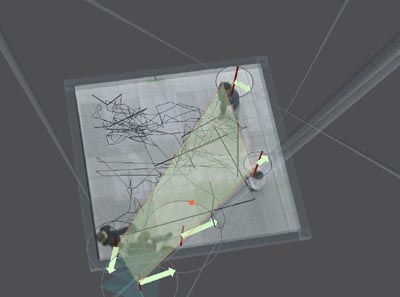

Ausstellung
im Multimediaforum NRW
Im Vorraum des Congresszentrums ist eine Kamera installiert, welche Besucher
aufnimmt. Sie können sich auf einer Videowand sehen, Töne erzeugen
und mit den Geometrien spielen, die ihre Bewegungen interpretieren. Pfeile
geben die Gehrichtung an, der Durchmesser der Kreise wächst mit der
Gehgeschwindigkeit, das hellgrüne Polygon umfaßt Personengruppen.